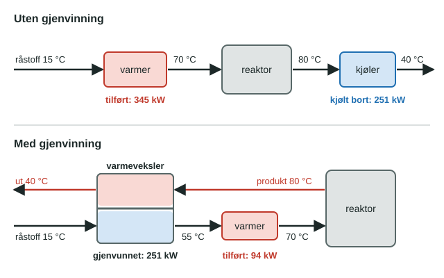

Energigjenvinning
Mye av varmen som går ut av et anlegg, kan brukes igjen. Da trengs det mindre ny energi. Det sparer penger og gir mindre utslipp. Å bruke varmen på nytt kalles energigjenvinning.
Denne siden bygger på Energibalanse i en varmeveksler og Varmetap og virkningsgrad.
Spillvarme
Spillvarme er varme som blir til overs i en prosess. Eksempler er varmt kjølevann, varme produkter som skal kjøles ned, og varm røykgass eller avgass. Spillvarmen må uansett føres bort fra prosessen. Spørsmålet er om den bare slippes ut, eller om den kan gjøre nytte et annet sted.
Om spillvarmen er nyttig, avhenger mest av temperaturen. Varm avgass på flere hundre grader kan lage damp. Lunkent kjølevann på 30 °C er vanskeligere å bruke, men kan for eksempel varme opp bygninger med en varmepumpe.
Forvarming med varmeveksler
Den vanligste formen for energigjenvinning er forvarming. Mange prosesser varmer opp et råstoff, og senere må produktet kjøles ned igjen. En varmeveksler kan da la det varme produktet som går ut, varme opp det kalde råstoffet som kommer inn. Da sparer du både energi til oppvarming og kjølevann.

Oppgave: Et råstoff (1,5 kg/s) skal varmes fra 15 °C til 70 °C før det går inn i en reaktor. Produktet kommer ut av reaktoren med 1,5 kg/s og 80 °C, og skal kjøles til 40 °C. Begge har samme spesifikke varmekapasitet som vann. Vi ser bort fra varmetap.
a) Hvor stor varmeeffekt trengs uten gjenvinning?
b) En varmeveksler kjøler produktet fra 80 °C til 40 °C og varmer råstoffet med den samme varmen. Hvor varmt blir råstoffet, og hvor mye må varmeren tilføre nå?
c) Hvor mye energi spares på et år med 8000 driftstimer?
Løsning:
- a) Uten gjenvinning: \( P = 1{,}5 \text{ kg/s} \cdot 4{,}18 \text{ kJ/(kg·°C)} \cdot (70 - 15) \text{ °C} = 345 \text{ kW} \)
- b) Varmen fra produktet: \( P = 1{,}5 \text{ kg/s} \cdot 4{,}18 \text{ kJ/(kg·°C)} \cdot (80 - 40) \text{ °C} = 251 \text{ kW} \)
Strømmene er like store og har samme \( c \). Råstoffet varmes derfor like mange grader som produktet kjøles, altså 40 °C: fra 15 °C til 55 °C.
Varmeren må bare varme fra 55 °C til 70 °C: \( P = 1{,}5 \cdot 4{,}18 \cdot 15 = 94 \text{ kW} \) - Kontroll: \( 251 \text{ kW} + 94 \text{ kW} = 345 \text{ kW} \). Det stemmer med a).
- c) Spart effekt er 251 kW. Energi per år: \( E = P \cdot t = 251 \text{ kW} \cdot 8000 \text{ h} = 2\,008\,000 \text{ kWh} \approx 2 \text{ millioner kWh} \)
Svar: Forvarmingen sparer 251 av 345 kW, altså ca. 73 % av energien til oppvarming. Det blir ca. 2 millioner kWh i året. Med en tenkt pris på 1 kr per kWh er det ca. 2 millioner kroner. I tillegg trengs det ingen kjøler for produktet.
Råstoffet kan aldri bli varmere i forvarmeren enn produktet som kommer inn (80 °C), for varme går bare fra varmt til kaldt. I praksis blir det litt mindre varmt enn produktet, fordi det trengs en temperaturforskjell for at varmen skal gå gjennom veggen. Når anlegget startes, finnes det heller ikke noe varmt produkt. Derfor trengs det nesten alltid en varmer i tillegg. Varmeveksleren er koplet i motstrøm, for da kan den flytte mest varme.
Andre måter å bruke spillvarme på
- Varmepumpe: En varmepumpe kan hente varme fra lunkent vann og levere den ved høyere temperatur. Det koster litt strøm, men gir mye mer varme tilbake. Se Varmepumpe og COP.
- Damp og strøm fra avgass: Svært varm avgass kan sendes gjennom en kjel som lager damp. Dampen kan brukes i prosessen eller drive en turbin som lager strøm.
- Fjernvarme: Varmt vann sendes i isolerte rør til bygninger i nærheten og varmer dem opp.
- Oppdrett og veksthus: Lunkent kjølevann kan holde riktig temperatur i fiskeoppdrett eller veksthus.
Et smelteverk bruker svært mye strøm i ovnene. En stor del av energien forlater ovnen som varme, blant annet med avgassen og kjølevannet. Flere norske smelteverk har bygd anlegg som gjenvinner denne spillvarmen.
I Sauda gjenvinner smelteverket spillvarme som brukes til å varme opp bygninger i Sauda. Varmen brukes også blant annet til snøsmelting i gatene og på stadion, og til oppvarming av svømmebassenget. Dette er et eksempel på fjernvarme: Varme som ellers ville gått tapt, gjør nytte i lokalsamfunnet.
Rør, varmevekslere og kjeler i et gjenvinningsanlegg er varme og står ofte under trykk. Ta ikke på utstyr du ikke vet temperaturen på. Åpne aldri noe før det er stengt, trykkavlastet og kjølt ned. En lekkasje inne i en varmeveksler kan gjøre at to strømmer blandes, for eksempel at produkt kommer over i kjølevann eller råstoff. Derfor følger operatøren med på trykk og temperatur og tar prøver av strømmene.
Test deg selv
1. Hva er spillvarme?
- varme som tilføres med vilje i en varmer
- varme som blir til overs i en prosess og ofte slippes ut
- varme som lagres i en tank til senere
Spillvarme er varme som blir til overs, for eksempel i kjølevann, varme produkter og avgass.
2. En varmer trenger 200 kW. Forvarming med en varmeveksler gjenvinner 150 kW. Hvor mye må varmeren tilføre nå?
- 50 kW
- 150 kW
- 350 kW
200 kW − 150 kW = 50 kW. Resten kommer fra den gjenvunne varmen.
3. Et anlegg sparer 100 kW i 8000 timer per år. Hvor mye energi sparer det?
- 800 kWh
- 800 000 kWh
- 80 000 000 kWh
E = P · t = 100 kW · 8000 h = 800 000 kWh.
4. Et produkt på 80 °C forvarmer et råstoff på 15 °C. Hvorfor kan råstoffet ikke bli varmere enn 80 °C?
- Fordi vannet koker ved 80 °C.
- Fordi varme bare går fra varmt til kaldt.
- Fordi varmeveksleren er for liten.
Råstoffet tar opp varme bare så lenge produktet er varmere. Det kan derfor aldri bli varmere enn 80 °C.
5. Hva kan en varmepumpe gjøre med lunkent kjølevann?
- gjøre det om til strøm uten tap
- hente varmen og levere den ved høyere temperatur
- kjøle det ned uten å bruke energi
En varmepumpe bruker litt strøm for å «løfte» varmen fra lav til høyere temperatur, der den er mer nyttig.
Ordliste
| Begrep | Forklaring | Engelsk |
|---|---|---|
| spillvarme | Varme som blir til overs i en prosess, for eksempel i kjølevann eller avgass. Den kan slippes ut eller gjenvinnes. | waste heat |
| energigjenvinning | Å bruke spillvarme eller annen overskuddsenergi på nytt i stedet for å slippe den ut. | energy recovery |
| forvarming | Å varme opp et råstoff før det går inn i prosessen, ofte med varme fra et produkt som skal kjøles. | preheating |
| fjernvarme | Oppvarming av bygninger med varmt vann som sendes i isolerte rør fra et anlegg. | district heating |
Les mer
- Energibalanse i en varmeveksler og Varmetap og virkningsgrad i dette temaet.
- Varmepumpe og COP i dette temaet.
Om kildene: Teksten, eksempelet og figuren på denne siden er laget for dette nettstedet, og tallene er tenkte. Siden bygger på undervisningsopplegg i kjemiprosess- og laboratoriefag ved Sauda vgs, som er utarbeidet med utgangspunkt i blant annet Kjemien stemmer, Laboranten og åpne nettkilder.